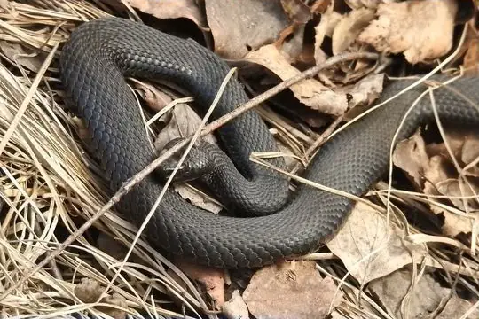
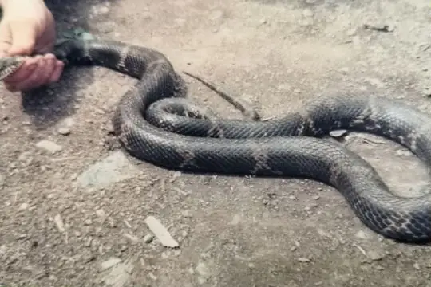
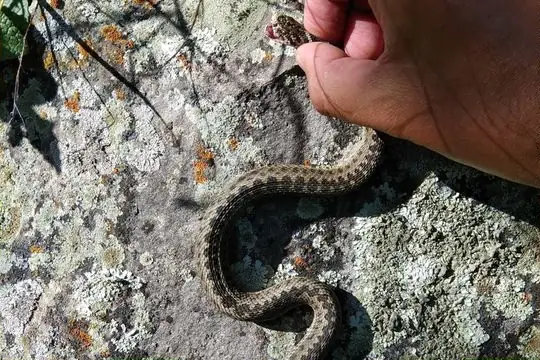
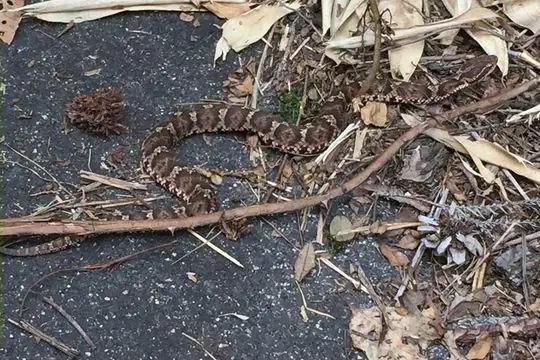
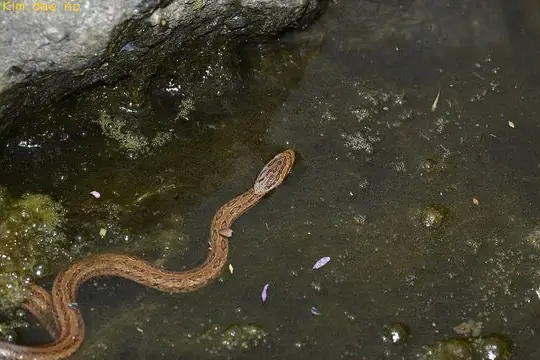
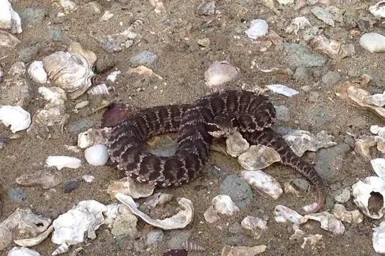
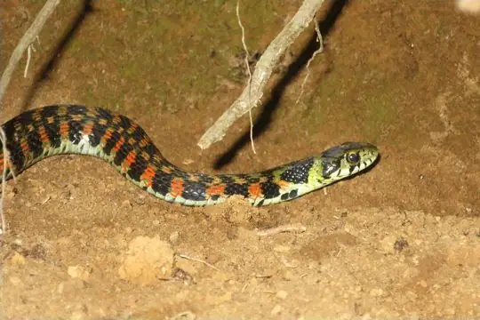
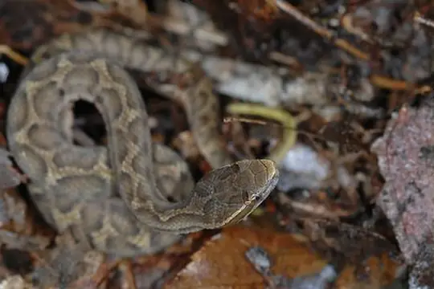

Snakes of Russia
31 snake species are recorded in Russia in SnakeList: 11 venomous and 20 non-venomous, from 3 families.
- 31species
- 11venomous
- 20non-venomous
- 3families
Species
Showing 31 species

AdderVipera nikolskii
Amur RatsnakeElaphe schrenckii Asia Minor Dwarf RacerEirenis modestus
Asia Minor Dwarf RacerEirenis modestus Cat SnakeTelescopus fallax
Cat SnakeTelescopus fallax Caucasus ViperVipera kaznakovi
Caucasus ViperVipera kaznakovi Collared Dwarf SnakeEirenis collaris
Collared Dwarf SnakeEirenis collaris Dice SnakeNatrix tessellata
Dice SnakeNatrix tessellata Dinnik's ViperVipera dinniki
Dinnik's ViperVipera dinniki Dione SnakeElaphe dione
Dione SnakeElaphe dione Dwarf Sand BoaEryx miliaris
Dwarf Sand BoaEryx miliaris East-Four-lined RatsnakeElaphe sauromates
East-Four-lined RatsnakeElaphe sauromates European AdderVipera berus
European AdderVipera berus Grass SnakeNatrix natrix
Grass SnakeNatrix natrix Halys Pit ViperGloydius halys
Halys Pit ViperGloydius halys Japanese WoodsnakeEuprepiophis conspicillata
Japanese WoodsnakeEuprepiophis conspicillata Large Whip Snake (caspius)Dolichophis caspius
Large Whip Snake (caspius)Dolichophis caspius
Lotiev's ViperVipera lotievi
MamushiGloydius blomhoffii Oriental Odd-tooth SnakeLycodon orientalis
Oriental Odd-tooth SnakeLycodon orientalis
Red-backed Rat SnakeOocatochus rufodorsatus Red-Bellied RacerDolichophis schmidti
Red-Bellied RacerDolichophis schmidti Rose Big-tooth SnakeLycodon rosozonatus
Rose Big-tooth SnakeLycodon rosozonatus Sand Boa (jaculus)Eryx jaculus
Sand Boa (jaculus)Eryx jaculus
Short-tailed Pit ViperGloydius brevicauda Slender RacerOrientocoluber spinalis
Slender RacerOrientocoluber spinalis Smooth SnakeCoronella austriaca
Smooth SnakeCoronella austriaca Steppe ViperVipera renardi
Steppe ViperVipera renardi
Tiger KeelbackRhabdophis tigrinus Transcaucasian Rat SnakeZamenis hohenackeri
Transcaucasian Rat SnakeZamenis hohenackeri Urartian Rat SnakeElaphe urartica
Urartian Rat SnakeElaphe urartica
Ussuri MamushiGloydius ussuriensis
No snakes in Russia match.
Russia’s snakes in numbers
- Families: Colubridae 19, Viperidae 10, Boidae 2.
- 4 are recorded in no other country in SnakeList: Amur Ratsnake, Red-backed Rat Snake, Tiger Keelback, Ussuri Mamushi.